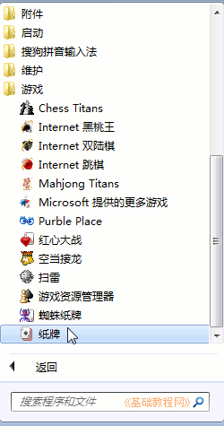
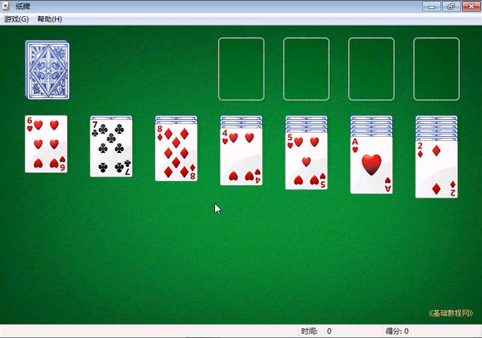
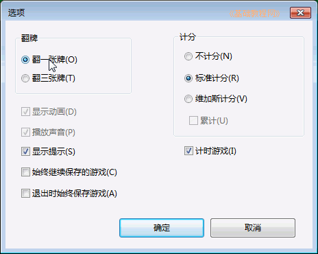
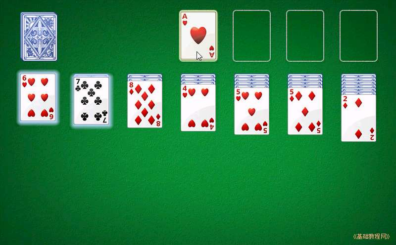
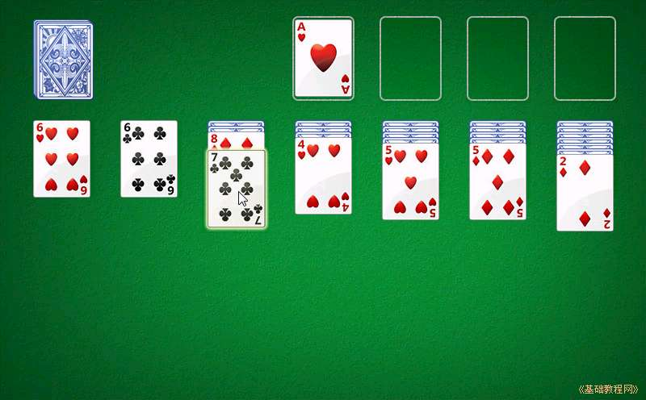
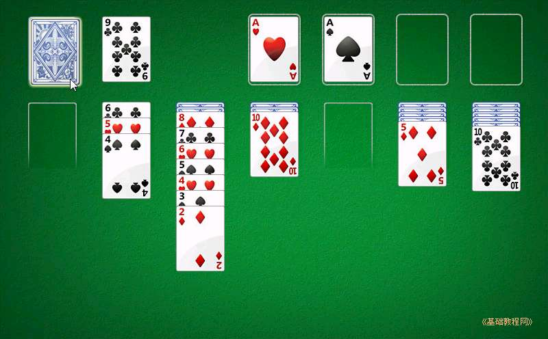
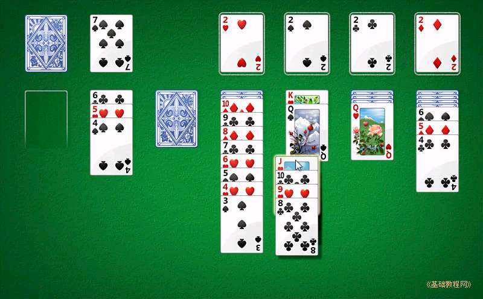
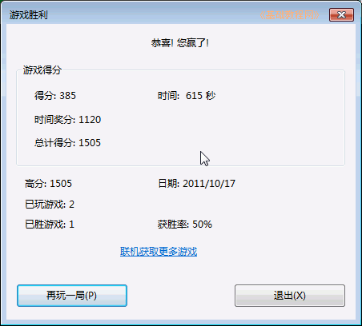

Windows7 基础入门教程
作者：TeliuTe 来源：基础教程网
七、纸牌游戏 返回目录 下一课纸牌可以帮助我们练习鼠标的操作，熟悉单击、双击和拖动操作；
1、启动纸牌
1）点“开始－所有程序－游戏－纸牌”，从而打开纸牌，出来一个绿色窗口；

2）左上角有一沓牌，没翻开的，中间有7沓，第一张是翻开的，然后右上角有四个空位；

2、游戏操作
1）点菜单“游戏－选项..”，出来一个对话框，选中上面的“翻一张”，然后点确定；

2）如果翻出来A，就可以把它拖到右上角去，然后再把2、3...都拖上去，全部摆好了，也就成功了；

3）如果把A移上去以后，下面的牌就可以翻开，继续排列；
4）牌的摆放顺序是一个压一个，按从小到大顺序，并且是颜色错开，像上面的梅花7可以压到方片8上；

5）当中间的牌走不动的时候，可以点一下左上角的一沓牌，出来的牌可以排列到中间来；

6）如果中间有空档，可以把K摆在到空档里头，另外可以把一沓牌一起移动过去；

7）这样不断的移动，翻牌、排列，把牌慢慢收到右上角去，用双击也可以收牌，最后就成功了；

3、练习：
1）成功的翻一把牌；
本节学习了纸牌游戏的基础知识，如果你成功地完成了练习，请继续学习下一课内容；
本教程由86团学校TeliuTe制作|著作权所有
基础教程网：>http://teliute.org/
美丽的校园……
转载和引用本站内容，请保留版权信息和本站链接。